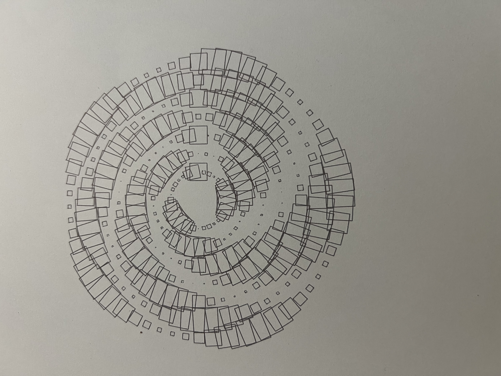

This drawing is a continuation of my pattern from last week. I repeated outlined squares in circular rings and changed their sizes to create a wave-like pattern. This experience helped me think more carefully about spacing, overlapping lines, and how complex a drawing should be for the plotter.
